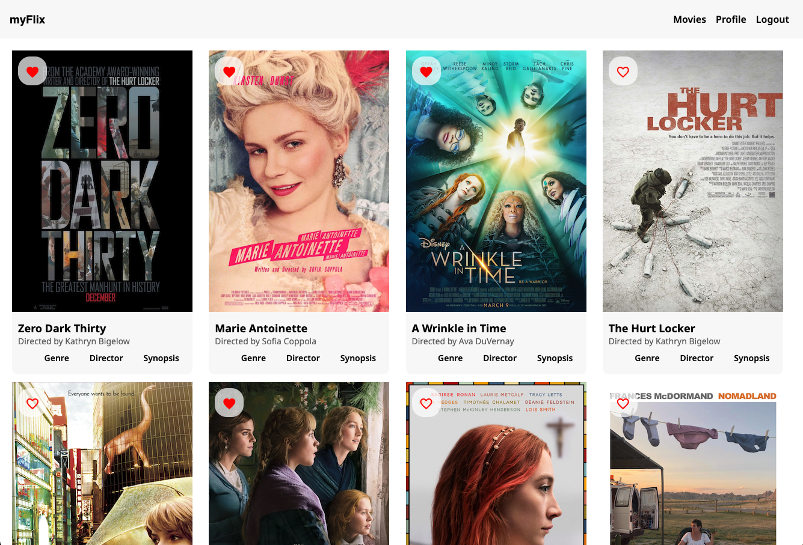
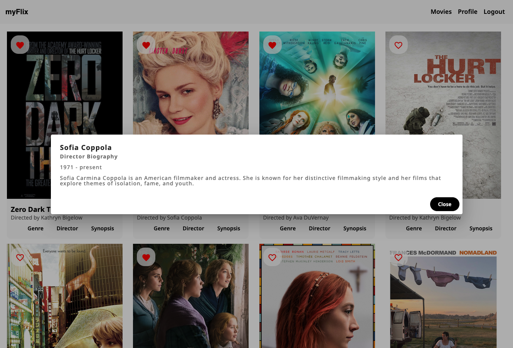

Work
myFlix - Angular App
myFlix is a single-page, responseive app built using Angular and Agular Material. It was designed to support the server-side Movie Nest API by facilitating user requests and rendering the response from the server-side. Users of the myFlix app are able to access information about different movies, including director and genre, and add movies to a list of favourites. Users are also able to update their profile information.


Features
- Browse Movies: View a list of all movies fetched from the MovieNest API.
- View Movie Details: Access information about genre, director, and synopsis via dialogs.
- User Authentication: Register a new account or log in with existing credentials.
- Manage Favorites: Add or remove movies from a user’s list of favorite movies.
- Profile Management: View and update user profile information (username, email, birth date, password).
Technologies Used
- Angular (v15): A modern, TypeScript-based framework for building scalable and dynamic single-page applications (SPAs).
- Angular Material: A UI component library for Angular, providing pre-built, responsive, and customizable design components.
- RxJS: A library for managing asynchronous operations and reactive programming, enabling efficient handling of data streams.
- TypeScript: A statically typed superset of JavaScript, enhancing code reliability, maintainability, and development productivity.
- Node.js / npm: A JavaScript runtime environment for server-side programming and npm (Node Package Manager) for managing dependencies.
View the Project Repository
Back to Projects